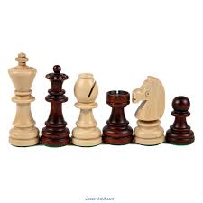

Основи гри
Шахматна дошка складається з 64 клітинок. У кожного гравця є 16 фігур: 1 король, 1 ферзь, 2 слона, 2 коня, 2 тури та 8 пішаків.
Ціль гри
Основна мета — поставити мат королю суперника, тобто створити ситуацію, в якій король не може уникнути шаха.
Дізнатись більше
Якщо вам цікаво вивчати шахмати детальніше, відвідайте сайт Chess.com, де ви знайдете багато корисної інформації, тренування та ігри онлайн.